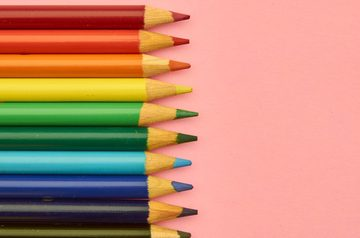

← Anterior
Zahlen
Siguiente →
Wochentage & Monate


Los colores son adjetivos en alemán, por lo que cambian de terminación según el sustantivo al que acompañan. Aprenderás también las formas geométricas y adjetivos de tamaño.
Cuando el color va solo después de un verbo (predicativo) no cambia. Cuando va antes de un sustantivo (atributivo) añade terminación según el género.
| Posición | Regla | Ejemplo | Español |
|---|---|---|---|
| Predicativo (después del verbo) | Sin terminación — no cambia | Das Auto ist rot. | El auto es rojo. |
| Atributivo masculino | -e (Nom.) / -en (Akk.) | der rote Ball | la pelota roja |
| Atributivo femenino | -e | die rote Rose | la rosa roja |
| Atributivo neutro | -e | das rote Haus | la casa roja |
| Alemán | Contrario | Español | Ejemplo |
|---|---|---|---|
| groß | klein | grande / pequeño | Das Haus ist groß. Das Kind ist klein. |
| lang | kurz | largo / corto | Das Haar ist lang. Der Rock ist kurz. |
| breit | schmal | ancho / estrecho | Die Straße ist breit. |
| dick | dünn | grueso / delgado | Das Buch ist sehr dick. |
| hoch | niedrig | alto / bajo | Der Turm ist sehr hoch. |
| rund | eckig | redondo / angular | Der Ball ist rund. |
| neu | alt | nuevo / viejo | Das Auto ist neu. |
| schön | hässlich | bonito / feo | Die Blumen sind schön. |
| Alemán | Español | Ejemplo |
|---|---|---|
| hellblau | azul claro | Das Hemd ist hellblau. |
| dunkelblau | azul marino | Ich habe eine dunkelblaue Jacke. |
| hellgrün / dunkelgrün | verde claro / verde oscuro | Die Tür ist dunkelgrün. |
| rosa | rosa | Die Blumen sind rosa. |
| lila | morado | Mein Rucksack ist lila. |
| orange | naranja | Die Tasche ist orange. |
| beige | beige | Das Sofa ist beige. |
| türkis | turquesa | Das Meer ist türkis. |
| gold / silber | dorado / plateado | Die Uhr ist silber. |
| bunt | de colores | Das T-Shirt ist bunt. |
| gestreift | a rayas | Ich trage ein gestreiftes Hemd. |
| kariert | a cuadros | Der Rock ist kariert. |
| Expresión | Literal | Significa |
|---|---|---|
| schwarzfahren | viajar de negro | viajar sin boleto |
| ins Blaue fahren | ir hacia el azul | salir sin rumbo fijo |
| grün hinter den Ohren sein | estar verde detrás de las orejas | ser muy joven, sin experiencia |
| rotsehen | ver rojo | enojarse mucho |
| schwarzsehen | ver negro | ser pesimista |
| Das ist mir schnuppe. | — | Me da igual (coloquial). |
| das Blaue vom Himmel versprechen | prometer el azul del cielo | prometer lo imposible |
| grünes Licht geben | dar luz verde | autorizar algo |
| Pregunta | Respuesta | Español |
|---|---|---|
| Welche Farbe hat das Auto? | Das Auto ist rot. | ¿De qué color es el coche? — Es rojo. |
| Was ist deine Lieblingsfarbe? | Meine Lieblingsfarbe ist Blau. | ¿Cuál es tu color favorito? — El azul. |
| Ist die Tasche schwarz? | Nein, sie ist braun. | ¿La bolsa es negra? — No, es café. |
| Haben Sie das auch in Grün? | Ja, in Grün und in Blau. | ¿Lo tiene también en verde? — Sí, en verde y en azul. |
| Was ist rund? | Der Ball ist rund. | ¿Qué es redondo? — La pelota. |
| Lo correcto | Por qué | No digas |
|---|---|---|
| Das Auto ist rot. | después de sein, el color no cambia | Das Auto ist rotes. ✗ |
| ein rotes Auto | antes del sustantivo neutro con ein: -es | ein rot Auto ✗ |
| Ich habe eine rote Tasche. | antes de un femenino con eine: -e | Ich habe eine rot Tasche. ✗ |
| braun | café se dice braun | kaffee ✗ |
| lila | lila y rosa no cambian casi nunca | lilanes ✗ |